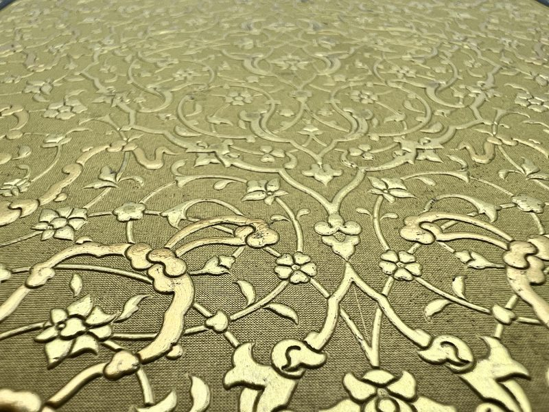
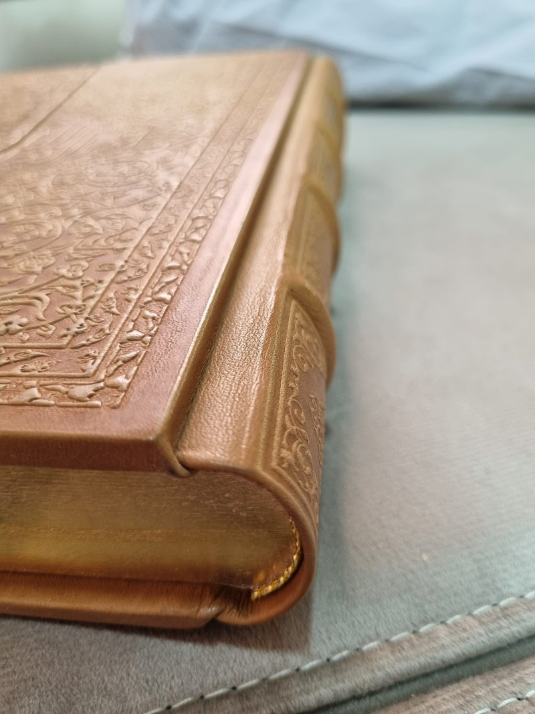
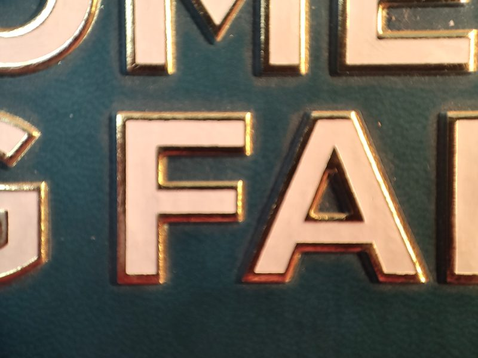
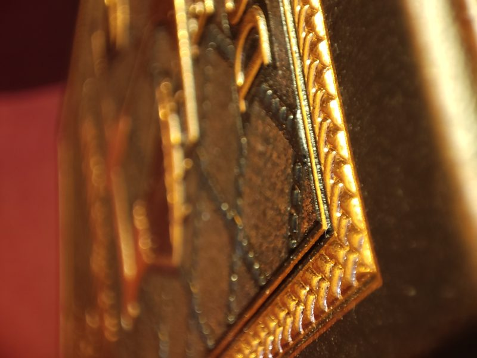
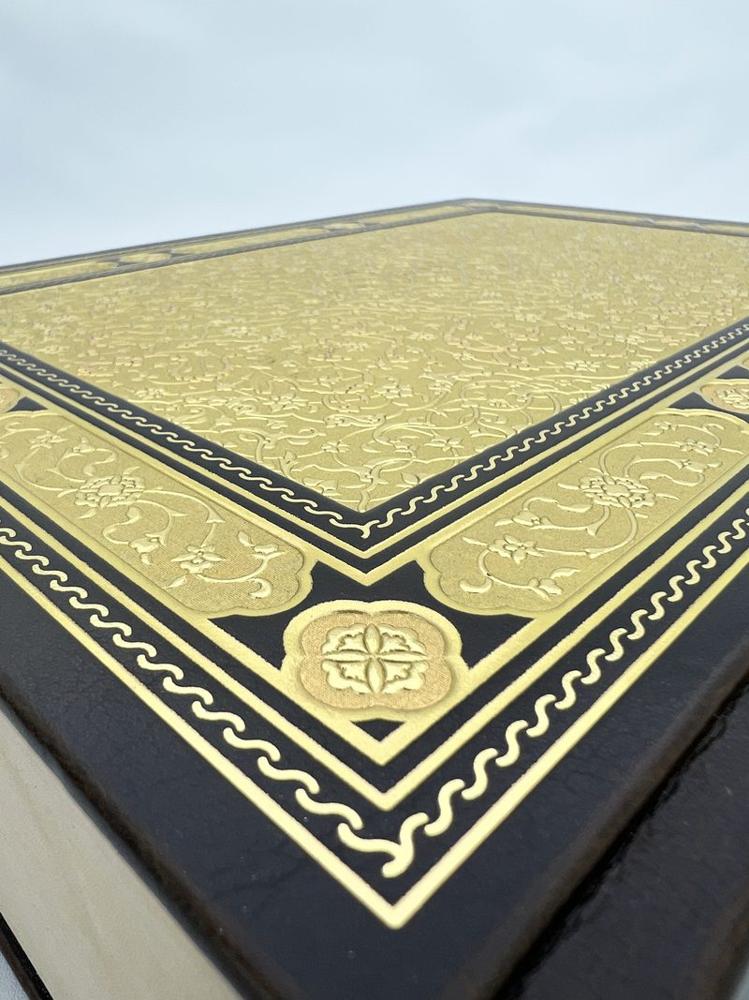
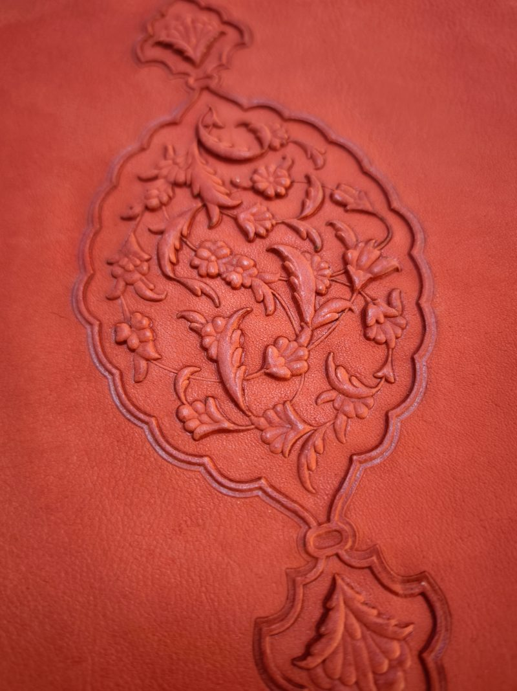
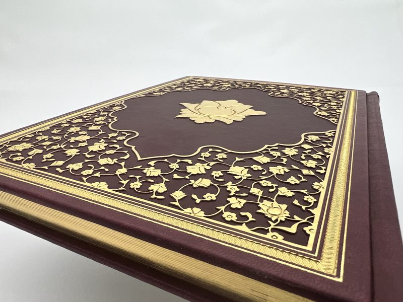

Hissedebileceğiniz derinlik
Gofraj preslerimiz elle çalıştırılır, bu bir tercih, bir kısıt değil.

2 mm'ye varan kabartma derinlikleri
Elle basınç ve bekleme (dwell) kontrolü, yoğun İslimi ve çiçek desenlerinde bile temiz omuzlar ve kopmamış yaldızla 2 mm'ye varan kabartma derinlikleri sağlar.
Her kapak elle ayarlanır, preslenir ve kontrol edilir. Otomatik bir hattın ince detayı ezdiği yerde, ustalarımız her deseni okur ve anlık olarak ayar yapar; böylece en derin oyuklar keskin, en yüksek noktalar net kalır.
Presleri iş başında izleyin
Gofraj, yaldız ve kapak imalatı, İstanbul'daki atölyemizde çekildi.
Altı teknik, tek registrasyon standardı
2 mm'ye varan derin gofraj
Otomatik hatların ulaştığından çok daha fazlası; temiz omuzlarla belirgin kabartma.
Elle şekillendirilen kabartma sırt şeritleri
Sırt boyunca elle biçimlendirilip yerleştirilen klasik kabartma şeritler.
Mahat
Kullanımla esneyen ve kapak ömrünü uzatan menteşeli oluk.
Sıcak yaldız baskı
İnce tezyinat üzerine temizce basılan altın, paladyum ve renkli yaldızlar.
Altın yaldızlı kitap kenarları
Metin bloğunu çerçeveleyen ve ışığı yakalayan perdahlı yaldız kenarlar.
Körleme (blind) tezyinat
Derinin dokusunu ve deseni öne çıkaran, yaldızsız baskı izleri.
Baskıya uygun doğru deri

Sırt Şeridi

Termo PU deri

Bez cilt (bookcloth)

Mahat
Makro ölçekte yaldız ve kabartma
Büyütmek için herhangi bir detaya tıklayın.






Derinliği kendiniz görün
Ücretsiz numune setimizi isteyin, deri örnekleri, gofrajlı bir kapak ve mini bir saklama kutusu, 2–4 gün içinde DHL ile masanızda.